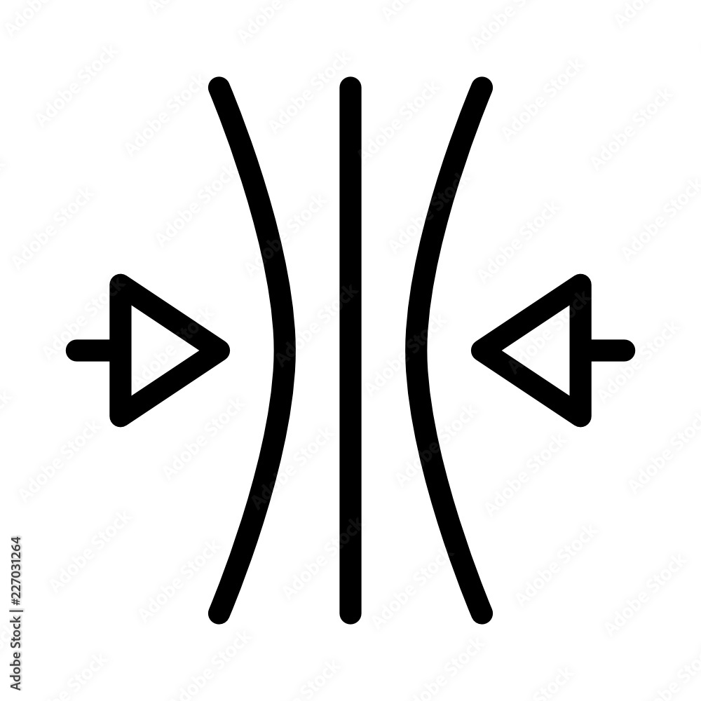

Quem sou eu?
Minha vida se resume em
Nascimento: Nasci em 1993, em São Paulo - SP. Vivi minha infância e adolescência em ITAQUAQUECETUBA
(não é um palavrão, só uma palavra grande, rsrs), São Paulo
Estudos: Me formei em 2016,em Química na UMC , e atualmente estou me empenhando em aprender Web Full Stack - Development, na Trybe®, que está dando origem a estes portifólio, e esta nova fase....

Relacionamento: Namoro o Kazu desde 2017....

Pet: Amo animais, e hoje tenho dois:
→Pandora:resgatada da rua, de um atropelamento, mas hoje, apesar de ter platina em uma das pernas corre mais que eu (é sério kkkkkkk)
→Ottis: a Pandora que resgatou da rua, nosso baby
Gostos pessoais
Astronomia: Amo ver fotos do universo, novas pesquisas e descobertas.
Para acompanhar costumo visitar o site do telescópio Hubble, ou busco imagens para datas especiais nesse site...
Ler Uma das minhas paixões sempre foi a leitura. O meu primeiro livro que tenho recordação de ler é o Uma professora muito maluquinha, do Ziraldo, mas meu livro preferido atualmente é o Uma mulher no escuro, do Rafael Montes.
Apesar de ter muito a melhorar, e estar em constante aprendizado e crecimento, me orgulho muito de ter adiquirido algumas qualidade, e as que destaco são:
Resiliência
Capacidade Analítica
Equilibrio